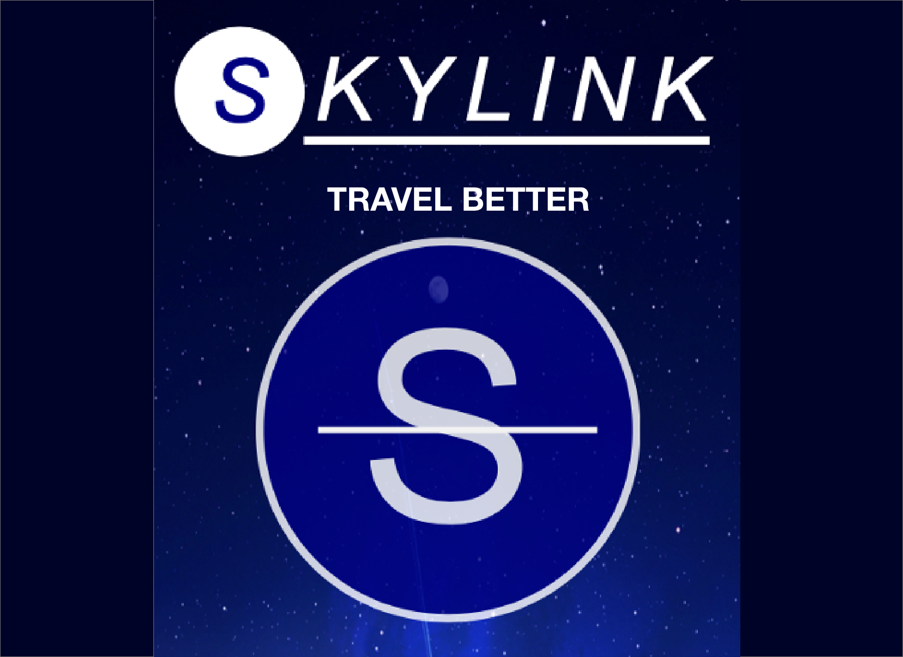
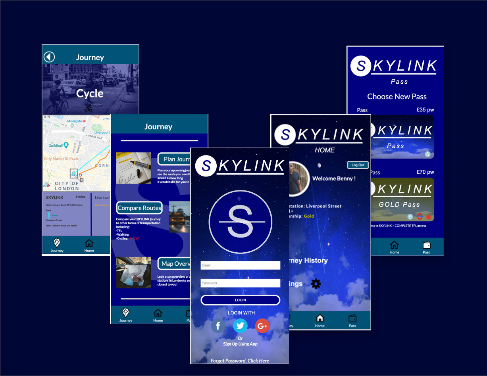
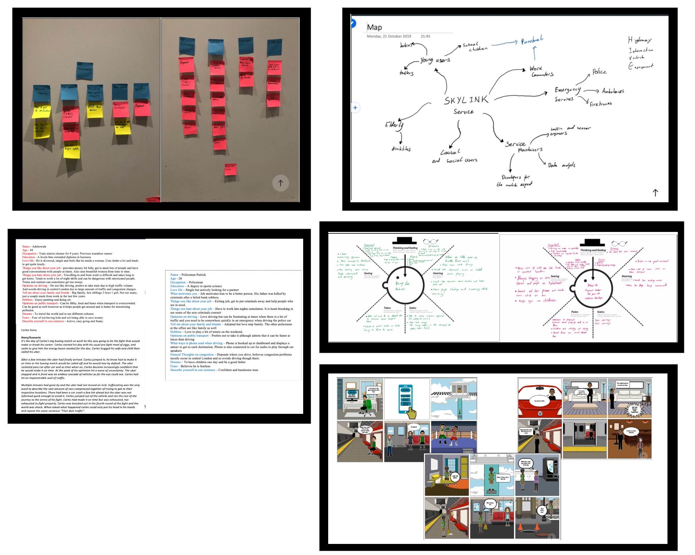
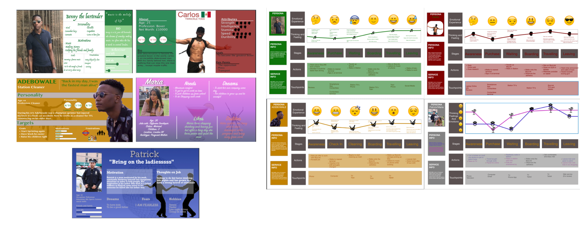
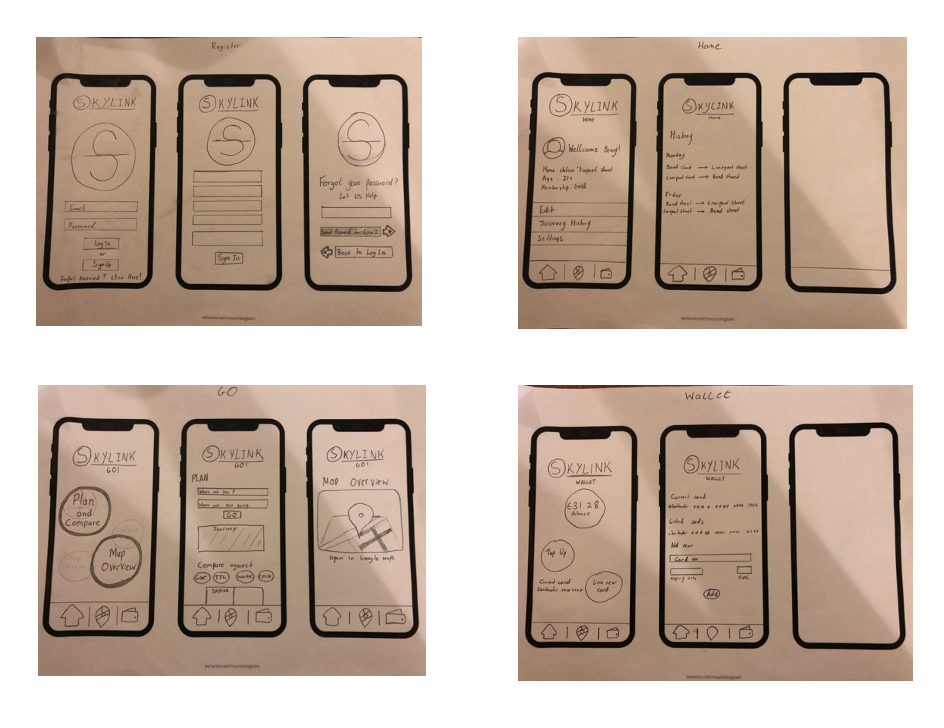
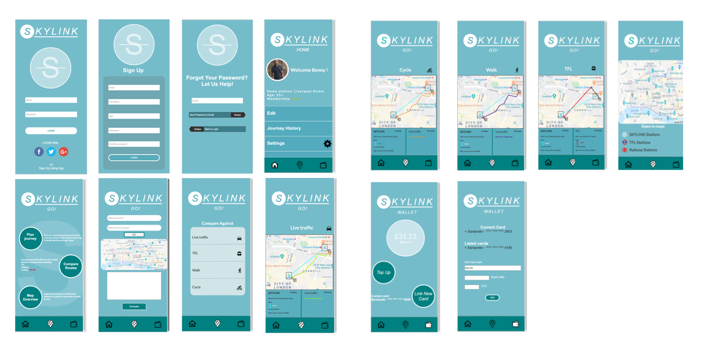
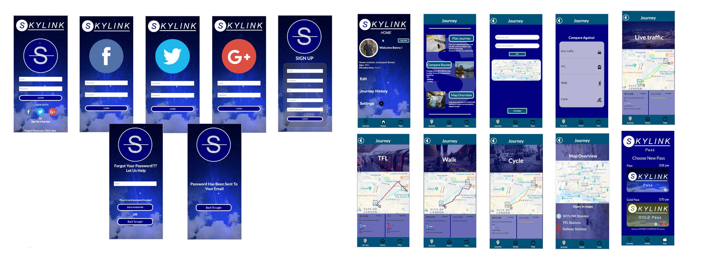

The sky is your transport
Created on Axure, SkyLink is the mobile app for a theoretical service known as The SkyLink. This TFL rail like service is a transportation system in central london that uses terminals and tracks above building level to help people traval. This app allows users to create accounts for SkyLink, check routes, compare journey times against other transport services and buy travel passes. Everything you need to be on the go is located in one app.
To better understand the users that could be utilising the service, several UX techniques were used. Card sorting, mind mapping, user interviews, guerilla personas and story-boarding all gave ideas of what kind of features users would like on the app and why.
From this the guerilla personas, were developed into graphical personas, each with different designs to push my design capabilities and to see which design methods would appeal the most. These personas were then used for customer journey maps and put through scenarios to see how different people could react to the service and how the service could be adapted to please them.
After this, various prototypes of the application UI were made. The first was a paper prototype that was sketched using pencil from gathering all features gathered from the UX research.
Following this, a digital prototype was mad using adobe XD. Here pages were further developed, and separated into sub pages. A colour scheme was then chosen. Once finished the design was evaluated using heuristic evaluation any usability problems could be detected early in the life cycle.
After this, the final prototype wa made using Axure. The colour scheme was changed and all usability problems fixed to make the app as asthetically pleasing and efficient as possible. A cognitive walk-through was then conducted to once again evaluate the app, yielding great results.
